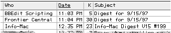
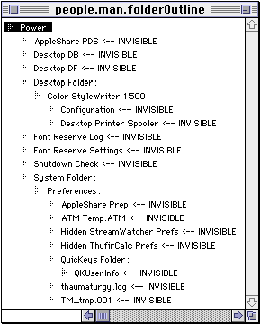
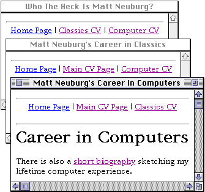
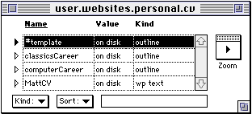
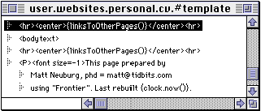
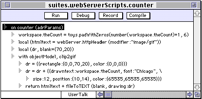

| TOP | UP: Getting Acquainted | NEXT: Edit Windows |
Up about 7:30. Coffee. Turn on the computer, which also causes Frontier to start up; I like to have Frontier always running.
Check my mail with Eudora Pro. Several mailing list digests have arrived during the night. I subscribe to a lot of mailing lists; I don't like to receive all the individual messages from these over the course of the day, so each subscription is to a single digest that arrives at night, containing all the messages from the previous day (see Figure 1-1).
|
 |
Now I want those digests saved to my hard disk as text files, each mailing list in its own particular folder. To do this by hand, I'd have to select a message, choose Save As, use the Save dialog to find the right folder, press the Save button, and delete the message - over and over, for each message. I'd rather do it automatically. But there's no way to script that kind of action with Eudora's built-in filters.
However, I've got Frontier. Frontier gives Eudora an extra menu; I can modify that menu, and in it I've put an item DigestsGo. I choose that item, and Frontier quickly runs through all the messages in my Eudora In-box, checking each one to see if it's a digest; if it is, Frontier saves the digest as a text file into the right folder and deletes the message.
Frontier can drive any scriptable application, and can communicate with the computer's filing system, make textfiles, and so on. As for the specific functionality of DigestsGo, I wrote it myself in Frontier's scripting language, UserTalk. How hard was it to write the script? Not very. Frontier's scripting language includes an online command reference and integrated debugger.
Last night I was using my other computer, a portable, in the living room, writing some articles. I work on my articles sometimes on my main computer, sometimes on my portable. I work on several articles at once, and I keep them all in one folder - except it's two folders, because there's a copy on my portable and a copy on my main computer. Now I need to bring both folders up to date. I hook the two computers together with a serial cable, with File Sharing turned on; now my main computer can "see" my portable.
To know which files to copy where, I don't need to compare the modification times on the two computers for every single file. I've got Frontier. Frontier gives the Finder an extra menu, and in that menu is an item Reconcile Folders. I just select the two folders and choose that item; Frontier does the rest, copying files to make both folders identical, with the most recent versions of everything.
Again, I'm using Frontier's ability to drive the filing system. The Reconcile Folders functionality is a UserTalk script, but I didn't have to write it - Frontier comes with this and lots of other utility scripts ready to run.
So much for that. Now . . . whoops, Frontier has just put up a dialog. Ah, it's reminding me I've got a bicycle club meeting tonight. I've set up Frontier to notify me on the first Wednesday of each month, except in June, July, and August, when the club doesn't meet. I also own a dedicated calendar program, but it can't handle concepts this complicated; Frontier can, because it's programmable. Good thing I've got Frontier.
Frontier comes with several "mini-applications" built from UserTalk scripts. One of these is the Scheduler, which lets any scriptable action be triggered at a specific date or interval; all I had to do was write a script that puts up the reminder dialog and then adjusts its own next trigger date.
Every so often I like to make sure I don't have any strange invisible files on my hard drive. I don't need to search the Internet for a special application to do this; I've got Frontier. I run a script which looks for invisible files and arranges the results as an outline, showing the hierarchy of folders that each invisible file lives in (Figure 1-2). The program is configured to exclude invisible files called Icon, because there are so many of them and they're harmless. There are certainly some invisible files here that I don't understand, though; they might bear watching. Time needed to examine over 3000 files: 12 seconds. Did I mention that Frontier is fast?
|
 |
I wrote the script that does this myself, based on an example included with Frontier. Again, it takes advantage of Frontier's ability to communicate with the filing system. In addition to dialogs, Frontier can put up various sorts of windows; this one is an outline, one of Frontier's most important ways of structuring information. Frontier itself is completely scriptable, so it can be programmed to generate the contents of this outline.
Time to get some real work done. Today I want to add a new feature to my Web site. I've got three Web pages describing my past career, in case some prospective employer comes looking. I want these to be really snappy and impressive, so I'm going to add a row of "smart" navigation links across the top and bottom of each page - the pages will all be linked to each other, but no page will contain a link to itself (Figure 1-3). There's nothing I hate so much as a Web page containing a link to itself, and yet I see that sort of thing all the time. I guess those Webmasters don't have Frontier.
|
 |
The three pages initially live inside the database that comes with Frontier, and they're configured to share a "template" (Figure 1-4) containing the material to be placed at the start and end of each page. So, to add this feature to all three pages, I have to add it to the template only once.
|
 |
Frontier lets you easily generate, without any programming at all, Web sites that include such advanced features as relative mutual links, "next" links, and site outlines, but this particular job calls for a little custom program in the template which calculates the HTML text for the smart links. The first line showing in Figure 1-5 is partly literal HTML, centering the smart links and making horizontal rules above and below them, and partly a call to the new program to generate the HTML of the links appropriate to the particular page that's being created.
|
 |
Now I simply choose a menu item, Release Table, in Frontier's Web menu. In a few seconds, Frontier has made three HTML files on my hard disk; viewing them in my Web browser shows the links working perfectly (as shown in Figure 1-3).
Frontier's database is good for storage and retrieval of all sorts of data; in this case, the data consist of outlines that act as the source for Web pages. Frontier comes with a Web site generator, one of its most powerful "mini-applications," Frontier is perfectly suited to this task, since, as we've already seen, it can make text files, and a Web page's text can be "calculated" with a script. This particular example involves adding some customized calculation; you can add any further features you like to Frontier's already full-featured Web site generation, because Frontier's scripting system is completely open.
The HTML files are ready to upload to my Web site. Since I don't feel like bothering with a separate FTP client program, I have Frontier perform the upload for me. Frontier can act as an Internet client for mail, HTTP, FTP, and so on.
Frontier is a self-contained network citizen. It can act as a client or a server over a TCP/IP network, such as the Internet, and it comes with scripts implementing the most common Internet protocols, such as FTP.
Another feature I want to add to my Web page is one of those "counter" graphics (Figure 1-6) that states the number of visitors to my site. Personally I think these are a silly waste of cycles and bandwidth, but they've somehow become de rigueur, so my Web page may as well conform.
Such graphics are GIFs generated by a CGI. Many Web servers come with CGI plug-ins, but I don't need those: I've got Frontier. Frontier comes as a CGI application, out of the box; it simply has to be running on the server machine, with the server application configured to route to Frontier any request for a document whose name ends with .fcgi. So, to add a counter to my Web page, I just add this HTML:
Now I'll write the script that makes the GIF. Frontier can't make a GIF, but it can drive any scriptable application, and Clip2GIF, a scriptable application, can create GIFs on demand. So the Frontier script (shown in Figure 1-7) increments a counter in the database and drives Clip2GIF to draw the counter's value as white-on-black text.
|
 |
First, I test the script on my machine. Once it's working, I need to make it available to the copy of Frontier running on my Web server machine. One copy of Frontier can speak to another across the Internet, so it takes only a moment to transfer the script from my local Frontier database to the remote one.
Frontier can be driven by other applications; that's why it can function as a CGI application, responding to messages from the Web server. And although omitted from the example for simplicity, Frontier is multithreaded, so it responds asynchronously to requests from other applications - that is, it deals with them simultaneously, without having to wait for one to finish processing before starting on the next. This feature, combined with UserTalk's speed, makes Frontier a remarkably rapid CGI application. The example also brings together many of the other Frontier features we've already seen: database storage, driving other applications, and communicating across a network.
Time for a break, perhaps a little early lunch. Wonder what I'll do with the rest of the day? One thing's for sure: I'll be productive. I've got Frontier.
The "Day in the Life" narrative illustrates Frontier's main features, variously combined and applied to a wide range of tasks. You might combine them in some completely different way - which is exactly the point. Frontier is a tool, not an end in itself; each person's needs being different, each user of Frontier sees the program differently. It's hard for me to imagine all the ways in which someone might use Frontier, so I solicited input from other actual users. Perhaps the best insight on the wide-ranging capabilities of Frontier comes from real-life stories like these:
I run a weekly newsletter. I have Frontier generate folders in a calendar structure (weeks within months) so I can drop in articles intended for each issue. Periodically, I have Frontier add up the number of characters in all the articles in each folder, so that I know how long each issue is getting.
· · ·
I supervise a public bank of computers. Each night, the copy of Frontier on my computer automatically wakes up, and drives copies of Frontier on the other computers to clean out files that don't belong there. It also reports on any anomalies on the other computers, such as important files that appear to be missing or moved.
· · ·
We went to a computer expo where we were demonstrating our Web site. Our booth had a computer where users could navigate our site over the Internet using a Web browser. When a user got done playing and walked away, Frontier would notice that the computer was idle, and would tell the browser to go back to our site's main page, making it the starting place for the next user.
· · ·
I manage a monthly journal. I have a FileMaker database of authors who are supposedly working on articles. Each month, Frontier uses the FileMaker database to construct and send personalized email messages to each author, asking how the article is going.
· · ·
Using Frontier's Web and CGI capabilities, I construct and administer college tests on the Web; each student uses a Web browser to take the test, whereupon the Web server gives that student's responses to Frontier, which puts all responses into a FileMaker database, where we grade them. Then Frontier constructs Web pages showing the results and statistics, and places them on our Web site.
· · ·
I'm a molecular biologist. My colleagues often get DNA and protein sequences off the Net and then need them parsed and formatted in special ways so they can use them in certain computer programs. I've written little Frontier routines that take care of this task for them.
· · ·
Here's how Frontier helped me get a job. A grocery store was periodically putting out a price list with bar-codes, making the price list by hand, using old lino equipment. I used Frontier to process their source data, including calculations to make the bar-code in a custom font, then drive QuarkXPress to generate the pages. A task that was taking them days on the lino was done in fifteen minutes. When I demonstrated this to the supervisor, he was blown away.
· · ·
To me, Frontier is CGIs. When you come to my Web page, Frontier uses the current date and time to perform trigonometric calculations that work out the current phase of the moon, and puts a picture in the Web page showing the moon at that phase. Also, I listen to CDs on my computer. My CD player application is scriptable. So I wrote a CGI, and now one of my Web pages tells you what music I'm listening to at that moment. I do also use Frontier CGIs for serious purposes, like SSL transaction processing, error redirection, and IP screening to control access to intranet documents.
· · ·
I work at an elementary school. At the start of each year, I want students to be able to use their own email accounts immediately. A Frontier script runs through a FileMaker database of all the students, generating usernames and passwords for all of them. Then Frontier creates a folder for each student, with a folder called email in each one containing a Eudora Settings file customized for that student; and it sets up file sharing and access privileges for each folder.
· · ·
We sell online photo albums; a customer mails us photos, and we scan them to build a password-protected Web site where the customer can display and sell the photos. Frontier automates the entire workflow process. Dialogs prompt for the customer's name and address; Frontier stores these in our customer database, then generates a unique URL for the new site, plus passwords for it, and creates and prints customized instructions telling that customer how to maintain the site. Next, Frontier drives graphics software to equalize, resize, crop, and convert the images, uploading the results via FTP and compressing and archiving the original scans. Finally, it builds and uploads the Web pages themselves.
Just what is Frontier, and what sorts of thing can you do with it?
You can make an outline, where chunks of text are arranged hierarchically; subordinate material can be hidden, and if you move material, whatever is subordinate to it travels automatically with it. This makes for easy navigation and rearrangement.
You can make a word-processing text, where paragraphs can have widths and characters can have styling.
You can make a table, holding any number of pieces of information, each piece being any type of data: a number, a string, an entire file from disk, even an outline or a word-processing text. Each piece of information in a table has a unique name, so you can designate it meaningfully and retrieve it easily. And an entry in a table can be a table, providing another dimension for the hierarchical organization of information.
Frontier comes with one particular table, full of other tables and pieces of information, called the database. You can store information here. No matter how big or deep the database gets, every piece of information in it is uniquely named and instantly accessible.
You write a program by making a script . Like everything else, the script lives in a table in the database. The script is written in a special language, UserTalk. Frontier understands UserTalk, and runs it quickly. There is also a complete debugging environment. So you can develop scripts, test them, debug them, and run them.
Scripts can work together. A script can see all the other scripts in the database, and can run any of them as a subroutine of itself. So complicated programs can be constructed from many small simple scripts.
You might not feel like writing any scripts at first. You don't have to: Frontier comes with plenty of scripts already. They range from basic functions that make up the UserTalk language to sophisticated tools for accomplishing large tasks with little or no programming on the part of the user.
All the same, you'll soon realize that writing scripts is the way to access and customize the full power of Frontier. So you'll want to learn UserTalk. Part II of this book teaches it to you.
One of the things a Frontier script can control is Frontier itself. All parts of Frontier are scriptable. A script can see everything in the database. It can retrieve or change the value of a table entry, delete or create a table entry, and move or rename a table entry. It can construct an outline, enter information in an outline, extract data from an outline, and reorganize an outline. It can make a word-processing text, change any part of it, and use the text as input. It can open a Frontier window, and change its size and position. It can put up dialogs.
Frontier scripts can perform math calculations. They can also manipulate strings: change case, find-and-replace, concatenate, and extract. A Frontier script can make a file, write to it, read from a file, store a file in the database, rename a file, move a file, and delete a file. That's why Frontier is a natural tool for managing large Web sites: an HTML file is merely text that Frontier "calculates" for you.
Like most applications, Frontier has menus. A Frontier script can do whatever would happen if you chose a menu item from one of those menus: change the font or size of selected text, copy and paste, save the database, and even quit Frontier. Also, the opposite is also possible: a Frontier script can live inside a menu item. You can make new menu items and store scripts inside them. That makes it easy to run any commonly needed script: just choose the menu item you've stored it in.
A Frontier script can be made to run all the time, quietly, in the background. Then, when the right moment comes, it acts. A script might wait until two o'clock in the morning and then run. Or it could run every minute, checking something, and reacting under certain conditions.
Frontier scripts can reach outside Frontier, into the world of your computer. A Frontier script can check the time, beep the speaker, store data directly onto the clipboard, and watch for a keypress.
Frontier can communicate over a TCP/IP network. It can function as a client: it could talk to an FTP server to upload a file for you, or to an HTTP server to check whether some links are still good. It can function as a server, listening for a client to contact it. The client can be another copy of Frontier: anything a script can make Frontier do, it can make another copy of Frontier do, remotely, across the Internet.
Frontier can talk to other applications, on Mac OS, using Apple events. Many applications are "scriptable," and respond to commands and queries. A single Frontier script might operate upon a Frontier outline, get information from a FileMaker database, and write and send an email with Eudora.
Other applications can also talk to Frontier and give it commands. A FileMaker script might run a Frontier script as a subroutine. Frontier is multithreaded, so it can perform many tasks simultaneously. So Frontier is a natural CGI application, responding to a Web server by constructing Web pages on demand.
| TOP | UP: Getting Acquainted | NEXT: Edit Windows |